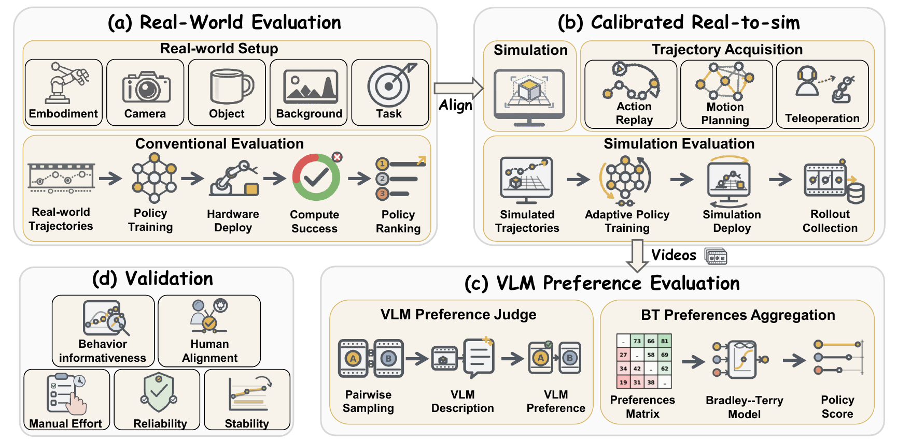
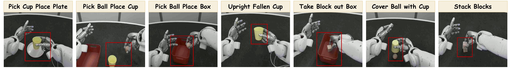
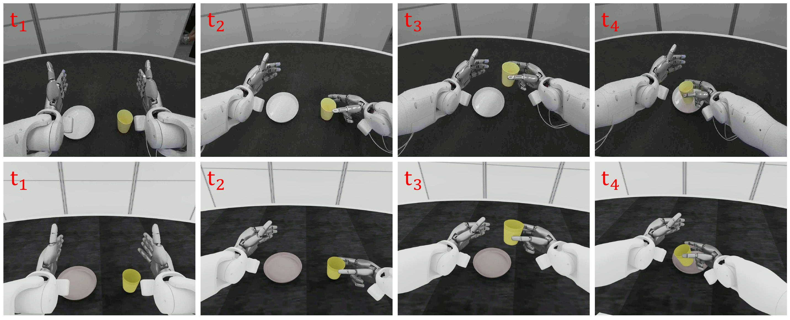
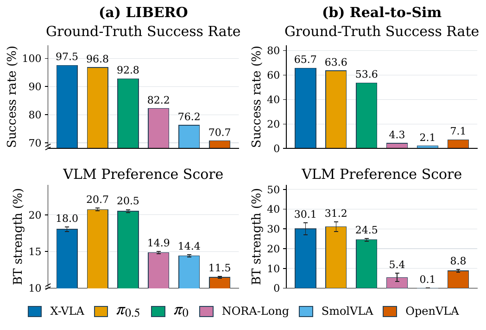
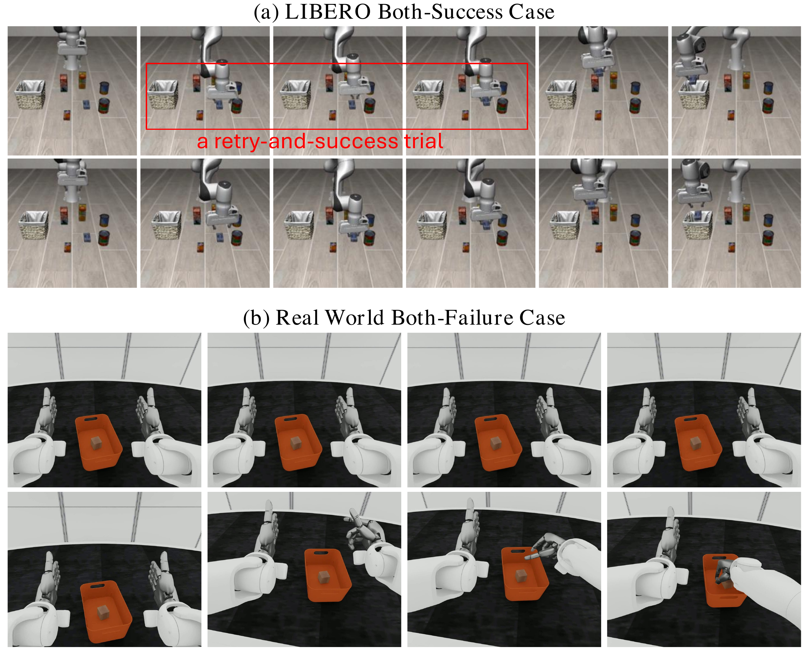

Behavior-level comparison
Formulates policy evaluation as preference estimation over rollout behavior, capturing execution quality beyond binary task success.
Anonymized manuscript
Robot Evaluation with Real-to-Sim Calibration via Vision-Language Models
Evaluating robot manipulation policies is becoming increasingly important as generalist models, particularly vision-language-action (VLA) models, are deployed on physical robots. However, conventional real-world evaluation remains labor-intensive, unstable, and insufficiently informative. It requires repeated hardware trials, manual scene resets, and continuous operator monitoring, may produce different policy rankings across repeated evaluations, and primarily relies on success rate metrics that provide limited information about execution quality. In contrast, humans assess robot performance by observing and comparing complete behaviors rather than relying solely on binary success outcomes.
To this end, we propose R2S-Eval, an automated evaluation pipeline that combines real-to-sim calibration with vision-language-model-based preference evaluation. The real-to-sim component efficiently generates rollout videos aligned with the target real-world evaluation setting, thereby reducing the need for repeated physical robot trials. The VLM evaluator assesses the execution quality of rollout videos and produces pairwise preferences, which are subsequently aggregated into policy rankings.
We further introduce a validation protocol to assess whether the proposed evaluation pipeline yields trustworthy policy conclusions while mitigating the key challenges of conventional real-world evaluation. Experiments in both simulation and real-world settings demonstrate that R2S-Eval produces reliable and stable policy conclusions, achieves strong agreement with human preferences, substantially reduces evaluation-time manual effort, and reveals behavior-quality differences that are not captured by binary success labels.
Contributions
Formulates policy evaluation as preference estimation over rollout behavior, capturing execution quality beyond binary task success.
Combines calibrated real-to-sim rollout generation with balanced pairwise VLM judgments and statistical aggregation.
Evaluates reliability, stability, human alignment, manual effort, and behavioral informativeness in one protocol.
Method
The evaluation loop aligns the behavior-determining factors of the target setup, turns rollouts into structured pairwise judgments, and tests whether the resulting conclusions are trustworthy.

Real-to-sim calibration
Match robot geometry and control, task objects and initial poses, cameras, task definitions, and scene context. Policies then run closed-loop in randomized simulation trials.
VLM preference judge
Balanced video pairs are described in terms of progress, continuity, control quality, and completion before the VLM selects the preferred behavior.
Statistical aggregation
Pairwise outcomes are aggregated with a Bradley–Terry model, producing latent policy scores and rankings that can be tested for reliability and stability.
Experiments
The study evaluates π0, π0.5, OpenVLA, NORA-Long, SmolVLA, and X-VLA with eight VLM judges from three model families.

A · Simulation benchmark
40 tasks from four suites, with 2,000 rollouts collected per candidate policy and 50 rollouts per task.
B · Calibrated deployment
Seven tasks on a SharpaNorth humanoid, using 3,525 real trajectories to acquire 3,445 simulated trajectories.

Results
Across eight VLM judges, preference-based scores closely track ground-truth policy performance while revealing differences that success rate alone cannot express.

Evaluation efficiency
Once calibration and policy adaptation are complete, rollout collection and VLM judging proceed without repeated physical scene resets or continuous operator monitoring.
Up to 26.9 operator hours in the reported conventional-evaluation comparison, versus no routine evaluation-time operation for R2S-Eval.
Beyond binary labels
A preference judge can favor a smooth one-shot success over a success with recovery, or meaningful progress over oscillation when both rollouts fail.

Citation
The manuscript is currently anonymized. This provisional entry will be updated with authors and publication metadata after release.
@misc{r2seval,
title = {{R2S-Eval}: Robot Evaluation
with Real-to-Sim Calibration via
Vision-Language Models},
author = {{Anonymous}},
note = {Manuscript}
}{kind=link}
{kind=link}
{kind=link}
{kind=link}
{kind=link}
{kind=link}